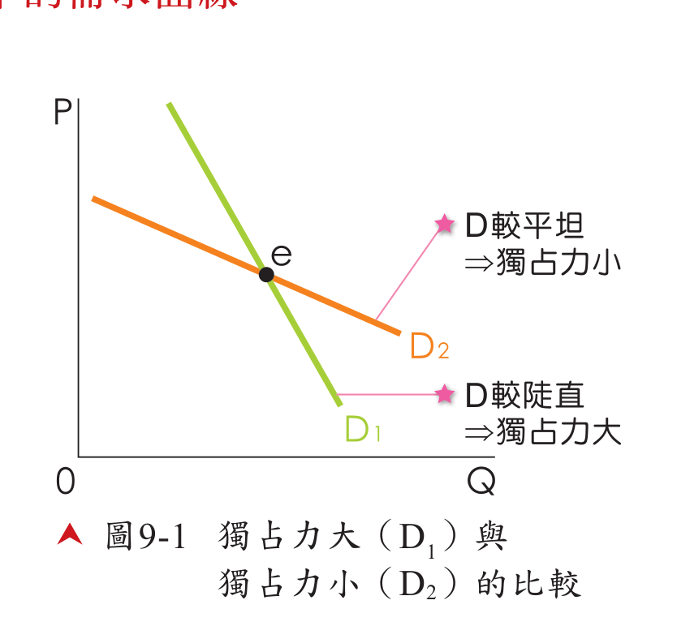
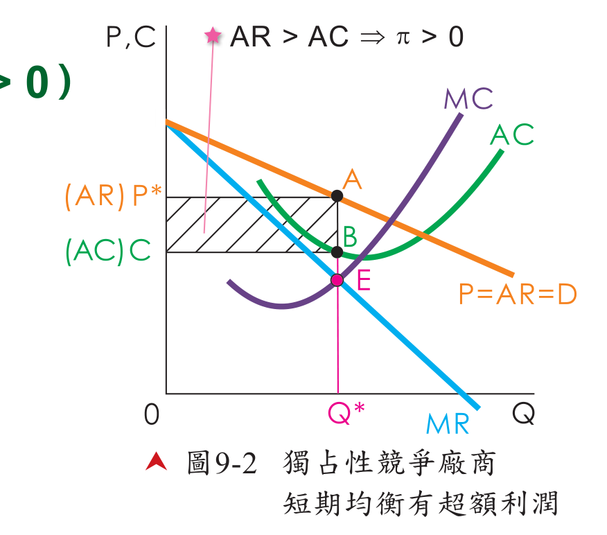
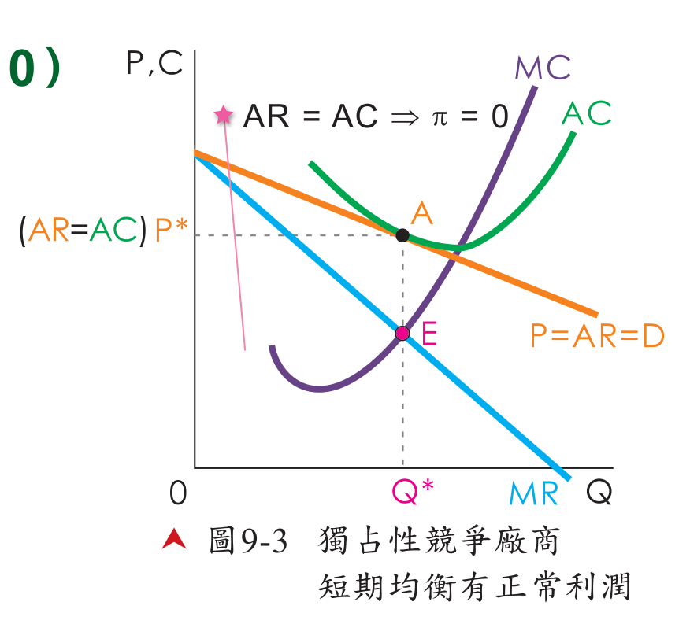
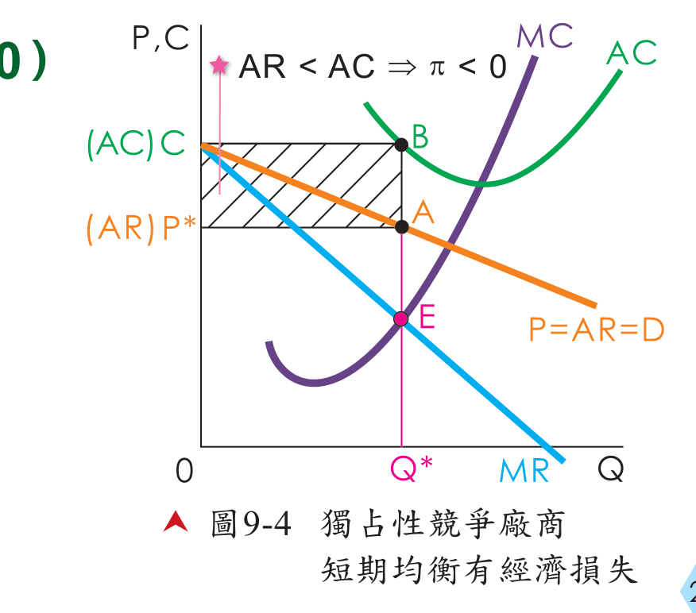
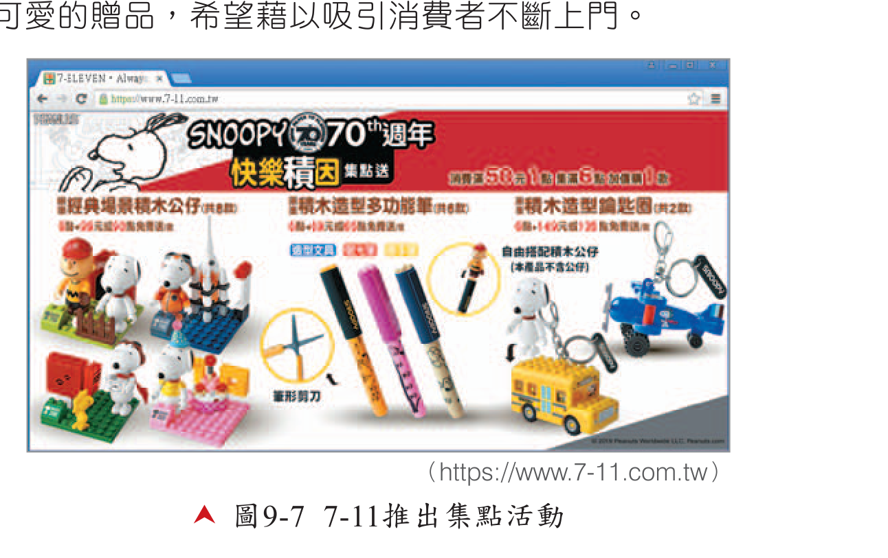
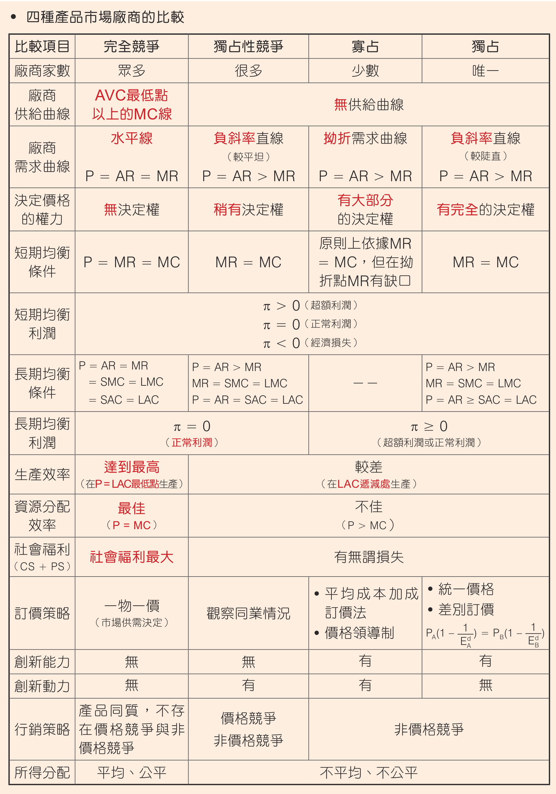
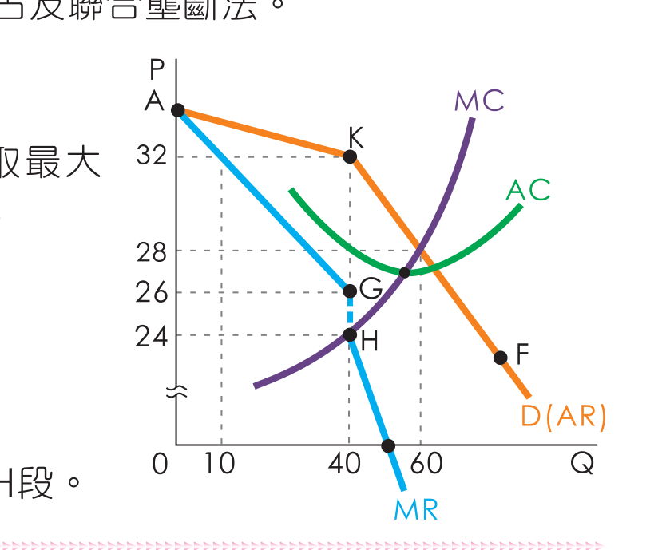
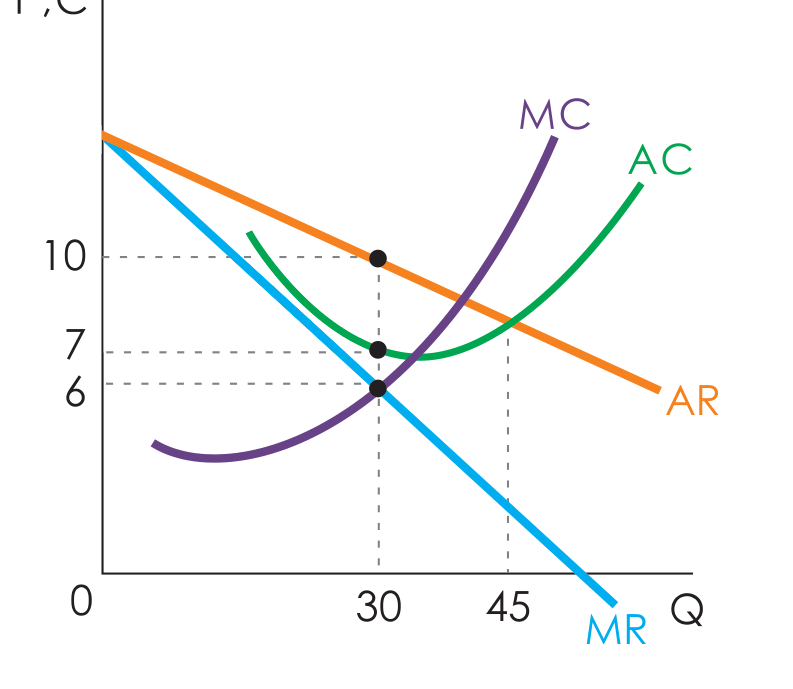

☕ 模組一：9-1 獨占性競爭市場特徵與短期三大損益情境
課本 9-1-1 & 9-1-2 節 ｜ 秦伯霖與羅賓遜夫人理論📌 理論源起與市場定義
不完全競爭市場理論由英國羅賓遜夫人（Joan Robinson）與美國秦伯霖（Edward Chamberlin）於 1930 年代分別獨立提出。
獨占性競爭市場（Monopolistic Competition）：廠商家數眾多、進出容易，但各廠商產品具差異性（異質性），兼具完全競爭與獨占之特徵（如手搖飲料店、早餐店、火鍋店、理髮美髮業）。
📐 需求曲線斜率與獨占力之關係（圖 9-1）
- 負斜率需求線：因產品具異質性，廠商對價格具些許控制力，故面對負斜率需求線（AR 線）。
- 需求線陡直（D1）：消費者對該品牌忠誠度高、對價格較不敏感（需求彈性小），廠商的獨占力較大。
- 需求線平坦（D2）：市場替代品眾多、消費者敏感度高（需求彈性大），廠商的獨占力較小。
- 【統測重要結論】：
獨占性競爭廠商的需求曲線比完全競爭廠商的水平線陡直，但比純粹獨占廠商的需求曲線平坦！

📊 獨占性競爭廠商短期均衡的三種情況（MR ＝ MC 決定 Q*）
與獨占廠商完全相同，廠商依 MR ＝ MC 決定產量後對應 AR 定價，盈虧視 P（AR）與平均成本 AC 的相對大小：

AR 與 AC 相交
• Q* 大多對應在 AC 遞減處
• 利潤 π ＝ 矩形 P*ABC ＞ 0

AR 與 AC 相切
• 切點對應在 AC 遞減處
• 經濟利潤 π ＝ 0（賺正常利潤）

AR 與 AC 相離
• 虧損金額 ＝ 矩形 CBAP*
• 去留決策同樣看 P 與 AVC
🔄 模組二：9-1-3 獨占性競爭長期切點均衡與超額產能分析
課本 9-1-3 節 ｜ 自由進出導致超額利潤消失
📌 自由進出下的長期動態調整
- 市場無進出障礙：短期有超額利潤時，吸引新廠商湧入設立新品牌；新廠商加入瓜分客源，使原廠商的需求線 AR 向左下方平移，直到超額利潤完全消失為止。
- 長期均衡結果：廠商只有正常利潤（π ＝ 0）！
- 長期均衡三大聯立條件：
- P ＝ AR ＞ MR（不完全競爭特徵）
- MR ＝ SMC ＝ LMC（最適產量 Q*，決定在 LAC 遞減處）
- P ＝ AR ＝ SAC ＝ LAC（AR 線與 LAC 線相切於 A 點）
| 比較項目 | 完全競爭市場 | 獨占性競爭市場 |
|---|---|---|
| 長期利潤 | 相同：π ＝ 0（只有正常利潤） | 相同：π ＝ 0（只有正常利潤） |
| 生產點位置 | 相切於 LAC 最低點（谷底） | 相切於 LAC 遞減處（谷底左側） |
| 產能利用 | 充分利用、生產效率最高 | 未達最適規模，存在超額產能 |
🚗 模組三：9-2-1 寡占市場與史威吉（Sweezy）拗折需求曲線模型
課本 9-2-1 節 ｜ 寡占價格僵固性的經典圖解📌 寡占市場（Oligopoly）的本質特徵：彼此牽制與高度依存
廠商家數極少（如汽車業、電信三雄、水泥鋼鐵、油品市場），任一家廠商的價格或產量變動，都會劇烈牽動其他競爭對手的利益。因此廠商行為呈現「相互牽制、相互猜忌」的高敏感度反應！
📌 史威吉（P. M. Sweezy）拗折需求曲線的核心假設
1930 年代史威吉提出拗折需求線（Kinked Demand Curve）解釋寡占市場的價格僵固（Sticky Prices）現象：
- 假設原市價 P0 已知。
- 寡占廠商心理預期：【跟跌不跟漲】！
- 不跟漲（AK 段）：某廠商漲價（P ＞ P0），其他廠商坐享其成不跟隨漲價，漲價廠商銷量大減，故面對需求彈性大、較平坦的 D1 之 AK 段。
- 跟跌（KD2 段）：某廠商降價（P ＜ P0），其他廠商深怕顧客被奪而立刻跟進降價，爆發價格戰，降價廠商銷量增加極微，故面對需求彈性小、較陡直的 D2 之 KD2 段。
- 形成拗折點：兩段需求線在現行價格 P0 處交會於 K 點（拗折點）。
因為需求線在 K 點發生斜率驟變，對應的邊際收益線出現垂直中斷不連續的垂直斷層（缺口 BC 段）！
價格僵固性結論：只要邊際成本曲線 MC 在此垂直缺口 BC 範圍內上下波動（例如要素價格微幅上漲 MC1 ➔ MC2），廠商依 MR＝MC 決定的最適產量 Q0 與售價 P0 完全維持不變！
⚠️ 史威吉模型的最大缺失
史威吉模型成功解釋了為何既有價格 P0 具有僵固性，但事前預先假設了 P0 已經存在，未能解釋最初的 P0 究竟是如何決定的，這是該模型最主要的理論限制。

🤝 模組四：9-2-2 & 9-2-3 寡占市場的訂價方法、競爭型態與勾結組織
課本 9-2-2 & 9-2-3 節 ｜ 卡特爾與非價格競爭
• AC：平均成本；r：加成百分比（利潤率）。
• 【課本實例】：摩斯漢堡海洋珍珠堡 AC ＝ 50 元，加成率 r ＝ 30%，則售價 P ＝ 50 × (1 ＋ 30%) ＝ 65 元。
二、價格領導制（Price Leadership）
由產業內市場占有率最高、規模最大（如 Apple iPhone）或歷史最悠久的寡占大廠擔任價格領導者（Price Leader）定價，其餘小廠充當價格跟隨者（Price Follower）照單跟進，避免引起同業惡性反彈。
⚔️ 寡占廠商的三大競爭與互動方式
1. 價格競爭：割頸式價格競爭（Cut-throat Price Competition）
降價引發連鎖跟跌，廠商相互廝殺使價格跌破平均成本（P ＜ AC），兩敗俱傷。例如早年國道客運台北到台中 200元➔100元➔99元➔88元流血削價大戰。理性廠商不會長期採用此策略！
2. 非價格競爭（主流競爭手段）
寡占廠商為避免兩敗俱傷，普遍改採廣告行銷、產品差異化、延長保固、售後服務、會員集點兌換贈品等非價格手段（如超商集點送、星宇航空全機免費無線 Wi-Fi）。
3. 勾結（Collusion）與卡特爾組織（Cartel）
- 公開有形勾結（卡特爾 Cartel）：廠商公開聯合達成數量分配與統一價格協議，追求聯合利潤極大化（如 1960 年成立之 OPEC 石油輸出國組織）。
- 卡特爾瓦解的根源：【廠商存在欺騙誘因】！廠商只要私下偷偷增產降價就能謀取暴利，導致相互背叛，勾結易於瓦解（如台灣四面板廠遭歐盟指控托拉斯壟斷，三星招供當「抓耙子」獲免罰）。各國均立法嚴禁（我國公平交易法、美國反托拉斯法）。

🏛️ 模組五：9-3 不完全競爭市場評論與四大市場結構終極全景總表
課本 9-3 節 & P.253 總結 ｜ 統測微觀經濟學最高精華表
⚡ 統測跨章總複習：四大市場結構必考指標矩陣
| 市場結構 | 廠商需求線（AR） | 短期均衡條件 | 長期均衡條件與利潤 | 生產與配置效率 |
|---|---|---|---|---|
| 完全競爭 | 水平線（P ＝ AR ＝ MR） | P ＝ MR ＝ MC | P ＝ MR ＝ MC ＝ min LAC 利潤 π ＝ 0 |
效率最高（P ＝ min LAC，P ＝ MC，無無謂損失） |
| 獨占性競爭 | 負斜率直線（較平坦，AR ＞ MR） | MR ＝ MC | MR ＝ LMC，P ＝ LAC 遞減處 利潤 π ＝ 0 |
效率較差（有超額產能，P ＞ MC 有無謂損失） |
| 寡占 | 拗折需求線（跟跌不跟漲，MR缺口） | MR ＝ MC（缺口內價格僵固） | 進入障礙高 利潤 π ≥ 0 |
效率較差（過度投入非價格競爭與廣告浪費） |
| 獨占 | 負斜率直線（較陡直，AR ＞ MR） | MR ＝ MC | MR ＝ LMC，P ≥ LAC 利潤 π ≥ 0 |
效率最差（超額產能、無謂損失最大、X-無效率、尋租） |
🎯 課本原版題庫實戰測驗（精選自課本 P.254～P.256）
即測即評 ｜ 點擊選項立刻驗證觀念解析：不完全競爭市場理論是由英國的羅賓遜夫人與美國的秦伯霖於 1933 年分別提出；史威吉（Sweezy）提出的是寡占市場的「拗折需求曲線模型」。
解析：獨占性競爭廠商在長期由於自由進出，超額利潤為 0（P ＝ LAC）。但因面對負斜率需求線，相切點必然落在 LAC 曲線的遞減階段，而非 LAC 的最低點（此即超額產能的由來）。選項 B 為完全競爭市場的長期均衡。
解析：史威吉拗折需求線鐵律為「跟跌不跟漲」：廠商漲價對手不跟進（彈性大較平坦）；廠商降價對手立刻跟進（彈性小較陡直），因而形成轉折點與邊際收益垂直斷層。
解析：
由平均成本加成訂價法公式：
P ＝ AC(1 ＋ r) ＝ 50 × (1 ＋ 30%) ＝ 50 × 1.3 ＝ 65 元。
解析：卡特爾協議中，只要其他成員遵守配額限產，個別成員廠商私下偷跑超額增產便能賺取鉅額暴利，因此「成員廠商普遍存在欺騙的誘因」。一旦發生欺騙行為，信任破裂價格戰再起，勾結同盟便迅速瓦解。

解析：
① 邊際成本曲線 MC 通過 MR 垂直斷層缺口處，對應的最適產量為轉折點 K 點產量，售價由需求線決定為 28 元。
② 廠商降價時對手跟進降價（跟跌），使得銷量增加有限，面對需求彈性小（較陡直）的需求線，即 K 點下方的 KF 段（AK 段則為不跟漲段）。

解析：
① 最適產量：由 MR ＝ MC 交點向下對應橫軸，得 Q* ＝ 30。
② 最適價格：由 Q* ＝ 30 垂直向上對應到需求線 AR，得 P* ＝ 10 元。
③ 利潤計算：在 Q* ＝ 30 處平均成本 AC ＝ 7 元。故利潤 π ＝ (P* － AC) × Q* ＝ (10 － 7) × 30 ＝ 90 元 ＞ 0，廠商享有超額利潤！